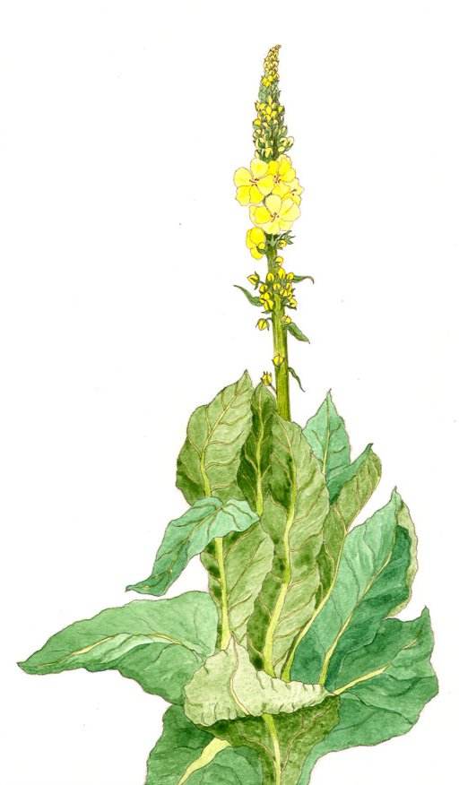

Colerte
fortifiant (absorption directe) - 10 po
↪ plante - littoral - été
↪ plante - littoral - été
La colerte est une plante à grosses feuilles et aux jolies fleurs jaunes qui pousse dans des climats chauds à basse altitude. Boire une infusion de colerte avant de boire de l'alcool permet de rester sobre.
Les effets néfastes sur le cerveau sont éliminés durant une grosse heure, mais l'alcool n'est pas éliminé de l'organisme. Si trop d'alcool est ingéré, le coma éthylique peut donc malgré tout survenir.
Les effets néfastes sur le cerveau sont éliminés durant une grosse heure, mais l'alcool n'est pas éliminé de l'organisme. Si trop d'alcool est ingéré, le coma éthylique peut donc malgré tout survenir.

Illustration reproduite avec l'aimable autorisation de Christine Achard
Illustration reproduite avec l'aimable autorisation de Christine Achard
Recueil des plantes d´AideDD